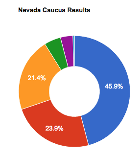

In-class exercise
This page features the in-class exercise we have worked on in IDV460. Just click the headline to view my work.
The balance of power in the U.S. House.
This chart shows how the balance of power tends to edd away from the president's party over the course of his two terms. We used this as a means of using an SVG graphic.
The Wrong Man
Texas — It was a secret they all shared. Some kept it out of fear. Some because no one ever asked. Whatever their reasons, it was a secret that might have saved Carlos De Luna from the execution chamber.
Quiz 1: Annual totals: Year-by-year frequency of the death penalty in the US.
This chart shows how the balance of death penalty change every year.
A first exploration of JavaScript
Our first efforts to write JavaScript code rom scratch includes a button to click and check the time, and to get a different greeting based on the time of day.
Annual totals: Year-by-year frequency of the death penalty in the US.
This chart shows how the balance of death penalty change every year.
Timeline
2016 Primary Result
The Delegate Count
GOP delegate count as of March 2
Killer States
Since the reinstatement of the death penalty in 1976, 1,427 prisoners have been put to death in 34 states. The vast majority of executions take place in five states, with Texas responsible for more than a third of all executions in the country.
The primaries so far
Donald Trump has moved clear ahead of his rivals for the Republican nomination following a series of wins in Tuesday's Super Tuesday primaries. This chart was created using Highcharts.
Temps
Temps
Changing My Colors!

This exercise is all about using DOM queries to change something on simple HTML page. Click away!
Per Capita Income for 2014
There is a considerable disparity among Indiana counties in terms of personal income, with almost $40,000 difference between the richest and poorest counties in the state. this map was crated using the Highmaps API.
How old is your country?
This map shows the median age for every country on Earth - with a few exceptions - and was crated using the Highmaps API.
In the footsteps of Ernie Pyle.

In 2008, the School of Journalism introduced a semester-long course on the life and times of Ernie Pyle. At the begining of the semester, students study the life and writings of Ernie Pyle, and during Spring Break the class travels to Europe to follow in the footsteps of the famous correspondent.
I love to read!
There is no greater pleasure than reading the world's greatest works of literature. please clock on all of the books below that you have already read.
London
The first stop on the week-long trip is London, where students visits several sites that were key areas in London War II - and where Erne Pyle once held growing influence as the war gathered pace in 1940.
Hoosier seeing red
Indiana Men's Basketball wins by season
Quiz 2: The Crime Scene and The Evidence

Detectives investigated the crime scene for about one hour and were unable to link Carlos De Luna to any forensic evidence. Store transaction logs suggest no money was taken from the Sigmor station store.
Indiana map
This map was created with QGIS.